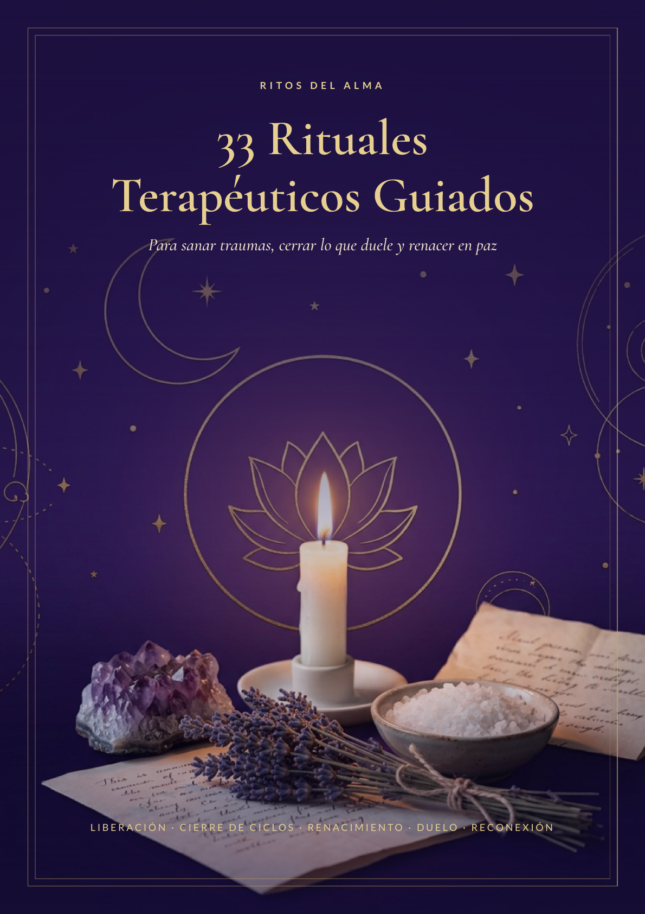
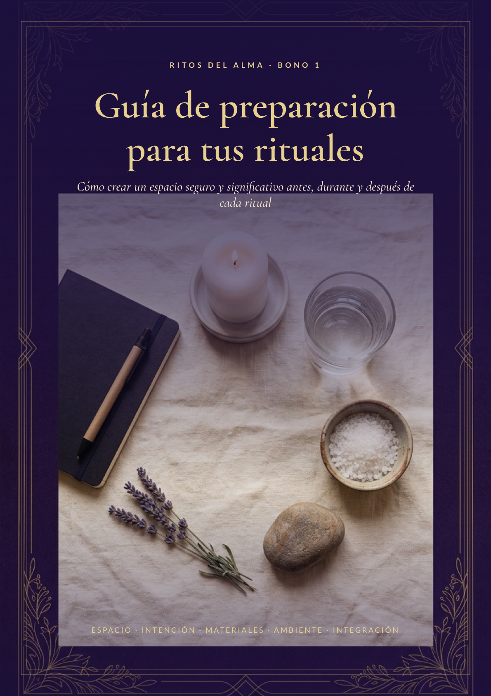
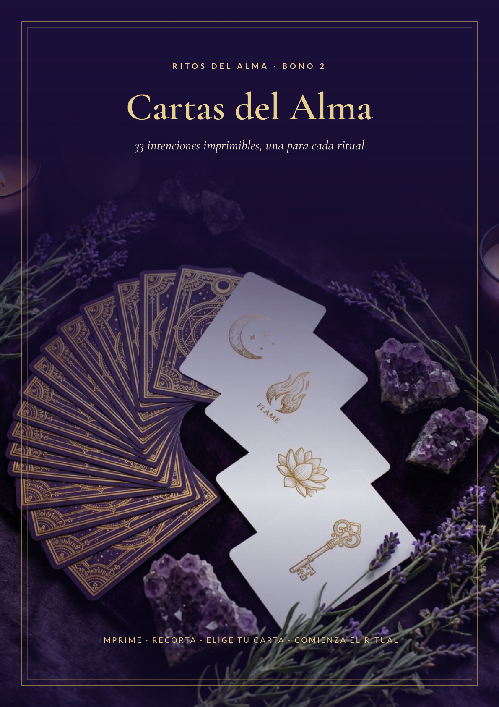
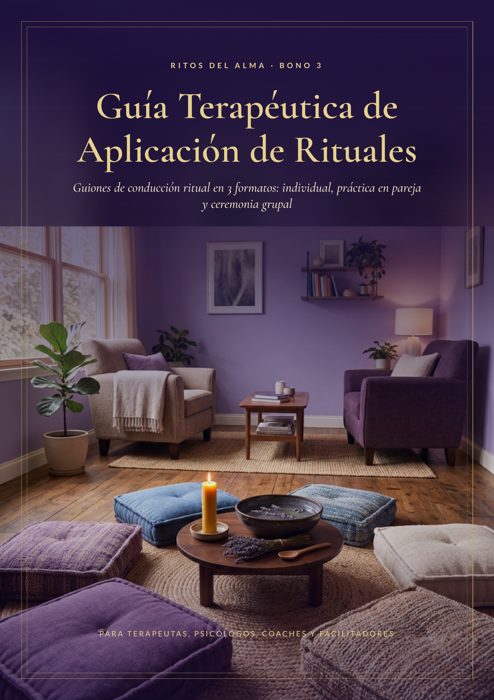

E-book principal
33 Rituales Terapéuticos
Prácticas simbólicas para acompañar cierres, duelos y nuevos comienzos.
Un espacio hecho para vos
Esta es tu biblioteca de Ritos del Alma: un rincón sereno para volver a tus materiales, a tu ritmo y cuando lo necesites.
Tu colección completa
La guía principal y los tres bonos que acompañan cada momento de tu práctica.

E-book principal
Prácticas simbólicas para acompañar cierres, duelos y nuevos comienzos.

Bono 1
Todo lo que necesitás para crear un espacio seguro y significativo.

Bono 2
33 intenciones imprimibles para comenzar cada ritual con presencia.

Bono 3
Orientaciones para uso individual, en pareja o en ceremonia grupal.
Tu acceso
Volvé a tu biblioteca cuando quieras. Cada e-book está disponible para lectura cómoda y también como PDF descargable.